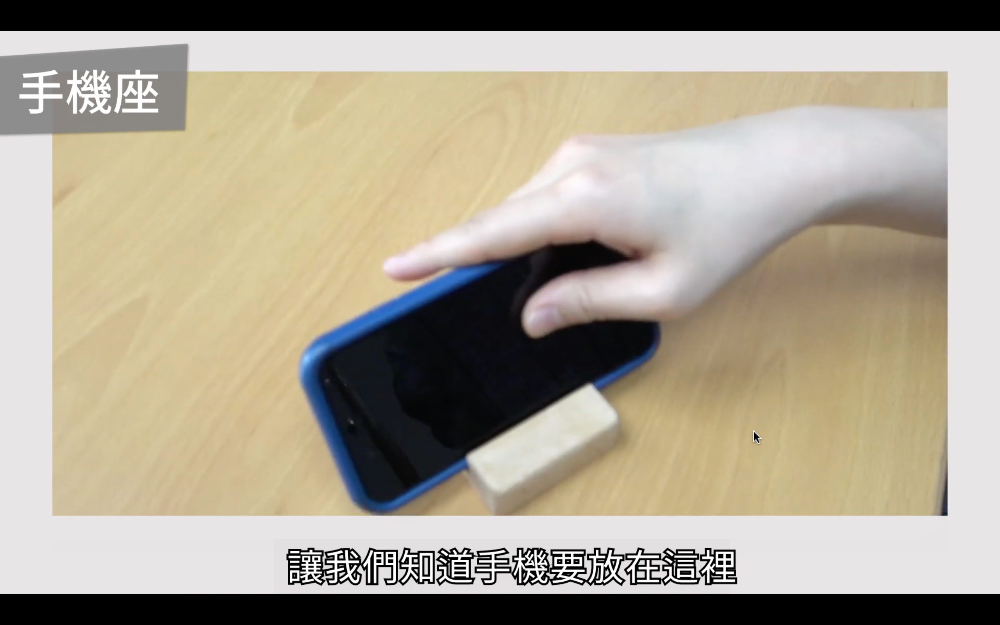

「人機互動概論：探索人與科技交會的新思維」系列影片，筆記第二彈～
影響物品設計好壞的 5 大要素
Discoverability (可見性)
- 當我們在看到互動物體時，是否可以了解到：
- 我們可以執行哪些行為？
- 如何在這個物體上執行這些行為來達到我們預期的效果？
- 以「門」為例
- 除了上述的例子，很多設計物，它其實也都利用了「可見性」這個要素，讓這些設計物在我們日常生活中變得更方便去使用！
- 馬克杯的把手也是「可見性」的展示，告訴我們要靠手去抓握拿起來
- 飯店房卡＆房間門長長細細的洞 → 讓使用者發現到需要做的動作，是可以把房卡往這個洞裡面放，來開房間門
- 以上這些例子都是我們在日常生活中，都會遇到的各種不同物品，它們利用「可見性」這個要素，來自然地與使用者溝通它應該怎麼被使用
Affordance
- 網路上能找到的翻譯：承擔特質／直觀功能／示能性／預設用途（但很難精準地用中文去翻）
- 定義：物體的實質特性 (形狀, 材質, 大小, 高低, 機械結構等等) 或物體所處的環境條件 (像是被擺放在很高的地方, 一個有斜坡的地方) 讓使用者可以自然且直覺地了解怎麼使用物體，並且達到他預期想要的效果
- 平面：具有支撐的性質（具有支撐的 Affordance）
- 因此當看到一張椅子的時候，可以從椅子它的座椅那邊有平面，知道說這個座椅的平面有承載、支撐的 Affordance，因此會知道我要坐在平面的座椅上，而不是把椅子翻過來坐在椅子的腳上，也不是坐在旁邊尖尖的扶手上
- 椅子利用「座椅平面」這個 Affordance 去讓使用者知道如何去跟椅子做互動
- 手機座：如圖片所示，此為手機架所具備 Affordance 的性質，因此這個手機架不需要特別再寫個標籤，寫說「請把手機放在這個凹槽」，它只要呈現它原本的樣子，就足夠傳達這樣的意思給使用者了 
- 電腦桌面：本身就是依據 Affordance 這樣的設計要素被製造的！
- 大家一定都有用過 (實體的) 桌面，我們會在桌面上擺上一份份的文件、垃圾桶可以丟點小東西，因此在虛擬的電腦裡，他們就把「桌面」這個具體實際物件搬到虛擬電腦中，這樣使用者可以了解到，我可以隨時回到這個桌面上，而在桌面上，可以把我虛擬的一些文件放在桌面上，當我不需要某文件的時候，就用滑鼠去點文件 (就像是用手去拿起文件)，並且將它拖曳到「垃圾桶」的 icon，就可以丟掉了！
- 就像真實世界的桌面，我們可以把文件、文件夾跟垃圾桶放到桌面上，把這個概念應用在電腦世界的虛擬資料上
- 利用我們日常生活、我們之前的經驗中具有的一些性質，把這個 Affordance 放在一個虛擬的電腦環境裡面
- Affordance 指的其實不只是物體本身的性質 or 這個環境它自己本身的條件，而是物體的性質以及環境所在的條件所傳達出來的意象，怎麼被使用者感知到之後，使用者知道有哪些可能的動作，可以去應用在這個物體以及環境上（該物體與使用者之間的關係）
- Affordance：物體與環境承載的特質如何被使用者感知與理解
- Is there a difference between affordance and discovery?
- Affordance is related to the object itself. Eg: A button looks clickable. Discoverability is related to the product/solution. Eg: An image-manipulation toolbar shows all features it is possible to use when you want to work with an image.
Signifiers (能指、所指)
- 用英文比較可以準確地傳達這個要素的定義
- 定義：向使用者「傳遞訊號」在物體的哪個部分要執行這些操作
- 使用者在第一次接觸一項新物品的時候，第一時間會先從物品的表面、形狀、材質、大小、高低、機械結構等等，去探索可能可以怎麼樣去操控這個物品
- 一個設計良好的物品，是能夠用各種方式向使用者傳達，可以怎麼使用、怎麼樣去對我做哪些動作的「訊號」，也就是「signifiers」
- 舉例：鍵盤。
- 每個按鍵都有英文和注音符號的標示，這些標示就是在告訴使用者，如果你想要打出特定的字母或是特定的中文字時，你應該要按哪些特定的按鍵，才能達到你的目的。
- 形狀不一樣的按鍵，也直接向使用者傳達說，假設你要按字母的話，是按這種形狀的按鍵，你要按 Enter 鍵的話，你要去找某種特定形狀的按鍵，所以物品的 signifier 也可以用物品的形狀來表達
- 鍵盤按鍵的佈局配置 (主鍵盤區、數字鍵區、特殊功能鍵區) 也是一種 signifier
- 鍵盤是利用「視覺」的 signifiers 向使用者傳遞要在哪個部分執行操作
- 不僅限於「視覺」，signifiers 有許多不同的表達方式，像是聽覺、觸覺、味覺、體感回饋等等
- 舉例：聽覺的 signifiers
- 救護車「喔咿喔咿」的聲音
- 救護車是利用「聽覺」的 signifiers，較為急促、高頻地傳達緊急狀況
Feedback (回饋性)
- 定義：讓使用者可以知道，裝置跟系統有依照使用者的需求在運作
- 裝置可以透過使用者的「各種感官」給予回饋，像是亮燈提示、發出小小的提示音
- 公車下車鈴可以有「聲音提示」，或者是有「閃爍燈號」來回饋給乘客，如此一來，可以讓使用者更好地知道，剛剛做了「按按鈕」的行為，是不是有成功引起這個裝置應該要有的結果
- 要注意的地方：這些回饋必須在動作結束之後立刻發生，並且必須要正確的傳達行為所造成的結果
- 發生錯誤的回饋性可能因素：沒有立即給予反饋 (按了下車鈴很久才有回饋音效)、給予誤導的反饋 (給的是不恰當的提示音像是答錯的音效)
Mapping (映射、對應性)
- 描述的是一種對應關係
- 解釋：Mapping 主要是借用數學裡面名詞而來，主要講述的是「不同集合的元素之間互相映射」的關係
- 把「對應性」放在人機互動的框架下＋白話的方式，「對應性」指的是：我們如何把 (1) 裝置的運作、(2) 使用者對裝置做的操作、(3) 裝置產生的效果，聯繫在一起。
- 如果這三者之間的聯繫，可以很自然、很直覺被使用者察覺到、學習起來並且記憶起來的話，我們就會說，這個裝置的設計有很好的對應性
- 「對應性」有很多種種類
- 「行為」上的相似性所產生的對應性：像是自動筆與筆芯。因為我往下按 (操作裝置的方向) 跟筆芯跑出來的行為 (產生效果的行為)，這個方向是一致的，反映了行為上的對應性，所以對我們來說，這種往下按就會跑出筆芯的設計就會非常好理解和被記得
- 「意義」上的相似性所產生的對應性：像是開關燈。手勢往上有增強加大的意義、手勢往下有減弱縮小的意義 → 通常把開關往下按就是把電燈關起來，開關往上按就是電燈打開
- 虛擬的電腦世界也可以看到這樣子對應性的設計：像是 volume slide bar，往上就是音量調大，往下則是音量調小
- 缺少對應性會造成問題的例子：教室一堆的電燈開關。「開關面板的設計」與「電燈的位置」並沒有使用對應性，對使用者來說，很難從開關設計去理解、去學習，到底我要關前排燈要按哪個開關
- 如果要改善，我們可以想想看，如何讓開關的位置與對應電燈的位置有所關聯，像是前排電燈的開關在上排，後排電燈在下排
- 像是這樣做一點點簡單的設計調整，其實都可以大大去改善這個缺乏對應性所造成的問題
其他影響好設計要素的原因
- 很多好設計都會同時具備一個以上的要素，而一些不好的設計也都同時缺少多個要素
- 通常一個讓我們覺得用起來很順手的設計，背後隱藏了很多設計師，還有開發人員的心血與巧思，這些巧思與心血，讓這些設計可以同時具備了多個好的要素，因此使用者在使用的時候，才會覺得這個東西怎麼那麼好用 → 類似「一日之所需，百工斯為備」
- 不好的設計，加上其他設計好要素，可以獲得好的改善
- Signifiers：向使用者「傳遞訊號」，在物體的哪個部分要執行這些操作
- 好設計的要素改善，會帶給我們什麼影響？消費者的喜好、安全性 (像是駕駛飛機時) 等等。
- 不同文化的使用者，對於物品如何呈現這些要素的需求都會不一樣
- 因此，要做出好設計的裝置或系統，除了要考慮上述的好設計要素之外，我們也要把一些因素同時納入考量，才可以達到我們所要達到的效果
新世代與電腦的互動裝置
- 思考一下，還有沒有更酷或是更科幻的與電腦互動方式呢？
- 滑鼠、鍵盤 → 觸控螢幕 → ???
- 鋼鐵人電影裡面的操作方式：Holographic User Interfaces、Gesture-based User Interfaces、in-air gesture
- 鐘點站裡面的倒數計時：on-skin interfaces、touch interaction
- Air+Touch: Interweaving Touch & In-Air Gestures
- 在一個智慧型手機的上方加上一個深度的攝影機，透過深度的攝影機，它可以知道現在這個手指跟螢幕之間還有上下的距離，把這些距離的資訊再利用電腦做分析，就可以去偵測手指的位置、可能是什麼樣的手勢
- Air+Touch 用了哪些好設計的要素？
- Mapping 對應性：螢幕上空的位置較遠，觸控螢幕的圓圈較大
- 另一個 Mapping 對應性：點擊之後，使用者可以在空中轉圈圈，就像 (音量) 旋鈕一樣，去微調在螢幕上地圖的大小
未完待續，stay tuned!